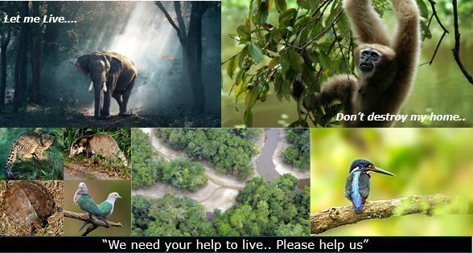

Recently, the Assam government notified Dehing Patkai as the 7th National Park of the state.
It was created shortly after Raimona reserve forest in western Assam’s Kokrajhar district was upgraded to a national park (6th) on the occasion of World Environment Day (5th June).
An area, whether within a sanctuary or not, can be notified by the state government to be constituted as a National Park, by reason of its ecological, faunal, floral, or zoological association or importance, needed to for the purpose of protecting & propagating or developing wildlife therein or its environment.
No human activity is permitted inside the national park except for the ones permitted by the Chief Wildlife Warden of the state under the conditions given in WPA (Wildlife Protection Act) 1972.
Some human activities can be allowed inside a wildlife sanctuary, but no human activity is allowed in a national park.
Location:
It is located within the larger Dehing Patkai Elephant Reserve which spreads across the coal- and oil-rich districts of Upper Assam (Dibrugarh and Tinsukia districts).
The oldest refinery of Asia in Digboi and ‘open cast’ coal mining at Lido are located near the sanctuary.
The Dehing Patkai Wildlife Sanctuary is also known as the Jeypore Rainforest.
Naming:
Dehing is the name of the river that flows through this forest and Patkai is the hill at the foot of which the sanctuary lies.
Significance:
Flora:
It is believed to be the last remaining contiguous patch of lowland rainforest area in Assam.
Fauna:
Rare fauna found in the region include Chinese pangolin, flying fox, wild pig, sambar, barking deer, Malayan giant squirrels. Being a completely virgin rainforest, this National Park is very rich in biodiversity. It is an ideal habitat for non-human primates. Till date, 47 mammal species, 47 reptile species and 310 butterfly species have been recorded. The most common mammal species of this National Park are hoolock gibbon, slow loris, Assamese macaque, stump-tailed macaque, capped langur, Asian elephant, Bengal tiger, Indian leopard, gaur, Chinese pangolin, Himalayan black bear, Red giant flying squirrel, leopard cat, clouded leopard, porcupine, crab eating mongoose, sambar, sun bear, binturong, barking deer, Asian golden cat and marbled cat.
It is the only sanctuary in India which is home to seven different species of wild cats - tiger, leopard, clouded leopard, leopard cat, golden cat, jungle cat and marbled cat.
Assamese macaque, a primate found in the forest, is in the red list of Near Threatened species.
It has the highest concentration of the rare endangered White Winged Wood Duck.
Climate: The climate of the region is mostly tropical with an annual rainfall of more than 4,000 mm. Monthly precipitation is at least 60 mm.
